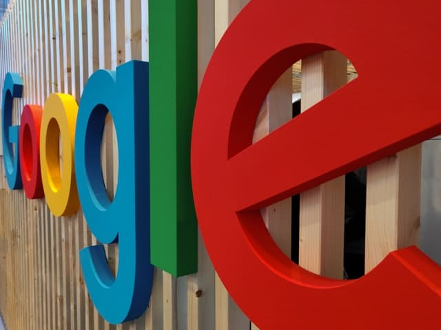
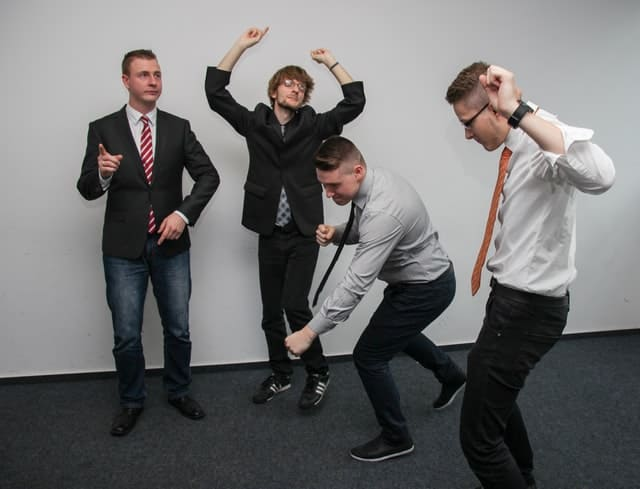

Fábrica de Felicidade - 2022
Fábrica de Felicidade
Por Shin emFelicidade no trabalho
Diga com sinceridade: você lembra de alguma empresa em que trabalhou ou conhece, onde o tema felicidade era tratado com seriedade? Ou então, mudando um pouco a pergunta: lembra-se de algum trabalho que você ficava triste na sexta por ter que ir pra casa e na segunda ficava super animado por ter que trabalhar mais uma semana?
A resposta provavelmente é negativa. Para provar tal fato, uma das coisas que mais se ouve com tom animado nas empresas é o famoso sextou. Ufa, superada outra semana neste trabalho, graças a deus passou.
Se identificou-se com essa situação, não precisa se preocupar. O normal nas empresas hoje em dia é essa sensação. O trabalho por obrigação. Associa-se naturalmente ter que trabalhar à uma coisa ruim.
Fábrica de Felicidade - A Solução
Eis que surgiu a Fábrica de Felicidade com a missão de mudar este cenário. O tema felicidade que nunca foi abordado de forma a ser um diferencial nas empresas do Brasil, agora está sendo procurado pelas maiores organizações.
Provavelmente você já ouviu falar no sonho de trabalhar no Google, com seu ambiente descontraído, com vários jogos e opções de entretenimento dentro da própria empresa. Grandes talentos sempre buscaram ter um emprego assim e o resultado disso é vermos o Google aumentando cada vez mais os lucros e ser referência em diversos padrões de uma boa corporação.
A Fábrica de Felicidade auxilia as empresas a chegarem nesse mesmo exemplo do Google. Buscando em qualquer grupo de RH nas redes sociais, um dos assuntos mais falados é “como conseguir reter os talentos na minha empresa?”. A resposta é simples: use a mesma estratégia do Google. Trate tão bem seus funcionários que os talentos irão procurar a sua empresa, a história inverte.
Melhorar o clima organizacional, ser alvo dos melhores talentos do mercado, associar sua empresa à felicidade são os benefícios da Fábrica de Felicidade. Ainda existem os pontos de diminuir o stress, evitar o burnout, adeus turnover, menos doenças psicológicas e estimular a saúde que são oferecidos também.
Quanto custa a Fábrica de Felicidade?
A Fábrica de Felicidade é a pioneira na política de “você escolhe o preço”. Sim, o cliente que recebe o serviço paga o quanto puder. Desta forma, estimulamos a gratidão que é um dos pilares da felicidade. Além de que este é um dos 5 itens da filosofia da Fábrica de Felicidade.
E quais são os outros itens? Doar sempre 10% do valor arrecadado para algo/alguém que esteja necessitado. Conquistar as coisas através da felicidade. Entender que empresas são pessoas. E a incessante luta pela gratidão.
Parece loucura? Com certeza. Não é uma ONG, não é apoiada por nenhuma entidade, não possui corrupção, não é religião e não é um serviço público. Simplesmente a Fábrica de Felicidade busca pessoas melhores no mundo, e após o foco de ajudar apenas pessoas em parques, o momento agora é levar a felicidade no trabalho. Missão árdua.
O tesouro Sr.Miyagi
Para estimular as pessoas provando que é possível, o co-fundador Sr.Miyagi de 70 anos acompanha em 100% presencialmente as atuações da Fábrica de Felicidade. Sempre levando uma energia de cair o queixo e brilha os olhos de quem participa.
Esta matéria poderia contar muito mais sobre a história do tesouro da Fábrica de Felicidade, mas para ficar um gostinho de quero mais, é aguardado o seu contato para que tudo seja contado pessoalmente e enfim entender o que é a felicidade no trabalho.
Um vídeo no YouTube explicando brevemente sobre filosofia Fábrica de Felicidade.
Um enorme abraço e grande gratidão pela leitura. 😉